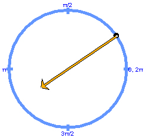

The image shows the acceleration vector of a particle (black dot) performing uniform circular motion. Although the particle's speed is constant, the particle's velocity is not constant because it changes direction while the particle is moving around the circle. Therefore the particle's acceleration is not zero.
One describes the direction of the acceleration as "radial" or "centripetal", radial because it is along the radius of the particle's circular path and "centripetal" because it points from the particle towards the center of the particle's path. (The word "centripetal" is derived from Latin and means "center-seeking".)
The magnitude a of the acceleration is given by the following two expressions:
a = r w2 = v2 / r
where r is the radius of the particle's circular path, v the particle's speed, and w the particle's angular speed.